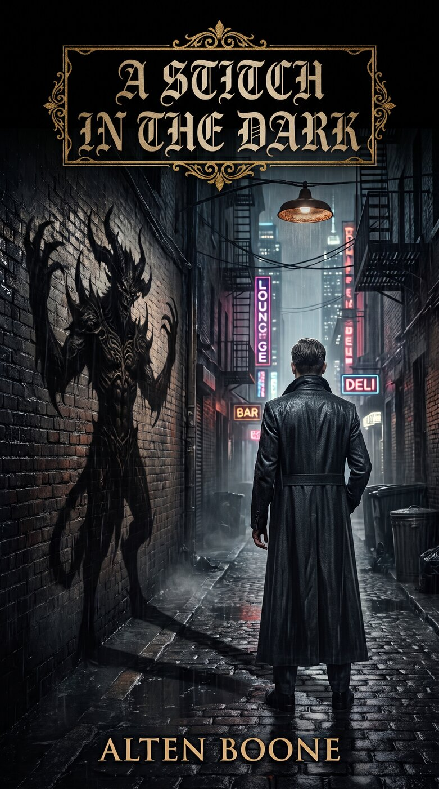
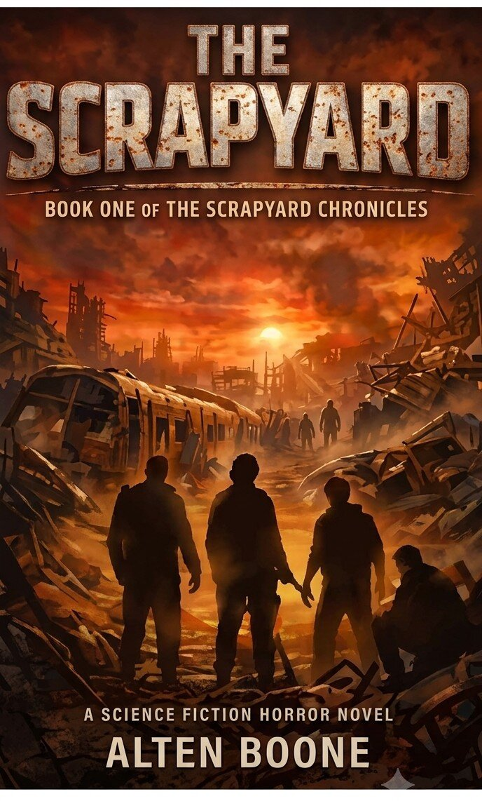
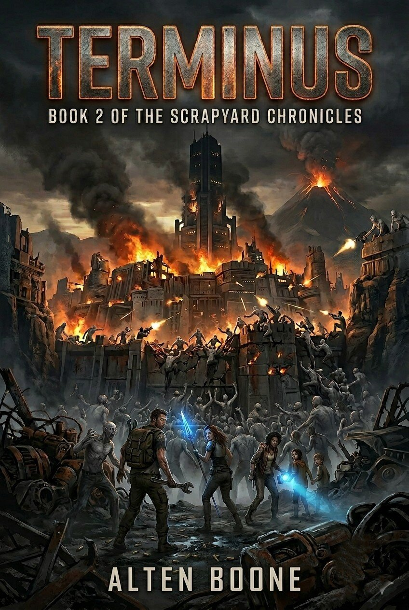
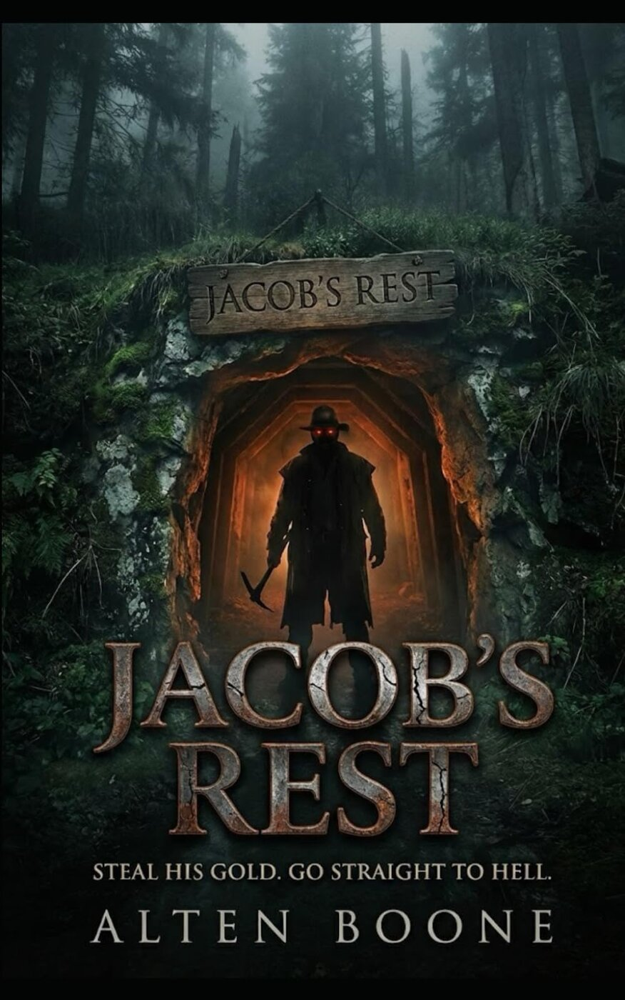

Dark Fantasy
Urban Fantasy
New release
Standalone · Independently published
Published Sep 23, 2026 · ~454 pages · Kindle ASIN B0HKSJDCC4 · Paperback ASIN B0HKSKYPM7
For forty years, he was the monster in the shadows. Now he has to become something worse to save the only person he has left. New York’s elite don’t just have money. They have appetites — and Stitch has spent four decades feeding them. He was Robert once: a scared kid from the Bowery who watched his brother die at an exclusive party that turned out to be a slaughterhouse. To survive, he made a deal with a monster wearing a bespoke suit and a silver-eyed smile. Then he meets a boy who reminds him exactly who he used to be — and for the first time in forty years, Stitch does the one thing a hound is never supposed to do. He runs. A blood-soaked, high-stakes urban fantasy about corruption, redemption, and what’s left of a man’s soul after he’s sold every other piece of it.

Survival Sci-Fi
Series · Book 1
The Scrapyard Chronicles · Clearsky Publications
Published Feb 7, 2026 · ~278 pages · ★★★★☆ 4.4 · ASIN B0GM5N97GH
The morning commute was supposed to end in London. Instead, it ended in another world. When a routine commuter train vanishes from Earth and crashes through a tear in reality, the survivors find themselves stranded in the Scrapyard — a hostile alien world where rifts deposit the broken remains of countless places across time and space. Wrecked technology. Twisted landscapes. Predators that hunt in the dark. With no rescue coming and no understanding of where they are — or why — the survivors must band together to endure relentless attacks from the world’s native creatures. As night falls and the true danger reveals itself, survival becomes a brutal, moment-to-moment struggle, and not everyone will make it through. When help finally arrives, it comes at a cost. The Scrapyard has inhabitants of its own, and safety lies beyond a journey through territory where death is constant and mercy is rare. Every step toward refuge claims another life, and every choice forces the survivors to confront how far they are willing to go to stay alive.

Survival Sci-Fi
Series · Book 2
The Scrapyard Chronicles · Book 2
Published Mar 6, 2026 · Kindle · Paperback · Hardcover · ISBN 9798251000399
The Scrapyard Chronicles continue. Having survived their first nights in a world that collects the wreckage of other realities, the remaining survivors push deeper into hostile territory. Help came at a cost — and the path to anything like safety runs through places where death is constant and mercy is rare. Terminus picks up the fight where The Scrapyard left off.

Occult / Supernatural
Novella
Standalone novella
Published Jan 29, 2026 · ~105 pages · ASIN B0GKJBTC39
Deep in the untouched wilderness of the Yukon lies a secret that has been buried for over a century: Jacob’s Rest. To the locals, it’s a cursed patch of land to be avoided at all costs. To Mike and his crew of small-time miners, it’s the location of a legendary lost fortune. Sarah joined the expedition for the money, but from the moment they step into the silent woods, she feels eyes watching them. When they finally crack the seal on the mine, they find more than just quartz and dust. They find a warning carved into the rock—and a fortune in raw gold that is too tempting to ignore. But the mountain does not give up its treasures willingly. As the crew descends into the dark, the mine begins to shift around them. Tunnels close, exits vanish, and the claustrophobic dark becomes a hunting ground. Jacob Fell is not just a story. He is a revenant of rotting flesh and undying vengeance, animated by an ancient, hungry evil that predates the Gold Rush. Now, trapped in a shifting labyrinth of bone and stone, Sarah and her friends must fight for their lives against a monster that cannot be killed—only contained. In the dark of the mine, greed is a death sentence.

Horror
Anthology
Horror anthology
ISBN 9798199558327
A collection of horror stories from Alten Boone — ordinary lives brushing up against the wrong kind of dark. From quiet dread to outright terror, Antiseptic Illusion gathers tales that linger after the lights go out.